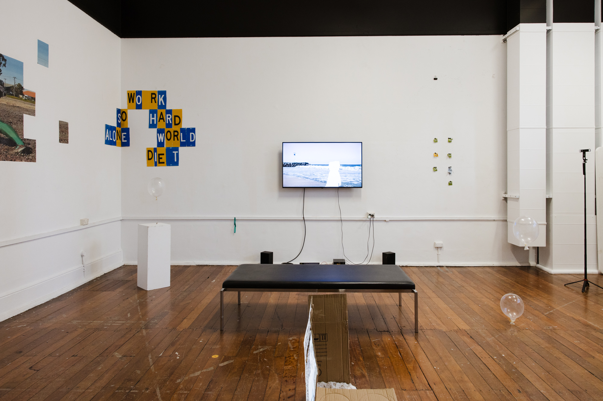

Unlikely heroes (2026) is a two-part video work documenting a collaborative performance by Jactina Larcombe. Developed in residency at Perth Institute of Contemporary Art, the videos document anonymised the performer as they engage with their respective worlds. The figures reckon with the material conditions of their environments as outlines, shapes, ghosts or avatars. In doing so, they navigate the evolving conditions of visibility in public space. Low quality iPhone footage seeks to situate the viewer, artist and subject as mechanisms within operations of surveillance. The work seeks to identify intersections of physical and digital public place, and make these intersections tangible through sculptural installation.
In the artists studio, Unlikely heroes 1 is displayed on a wall mounted monitor, and Unlikely heroes 2 is projected onto a cardboard box weighed in position with washed children’s play sand.
Unlikely heroes 1
Unlikely heroes 2
Photo: Olivia Pizzale-Bryce